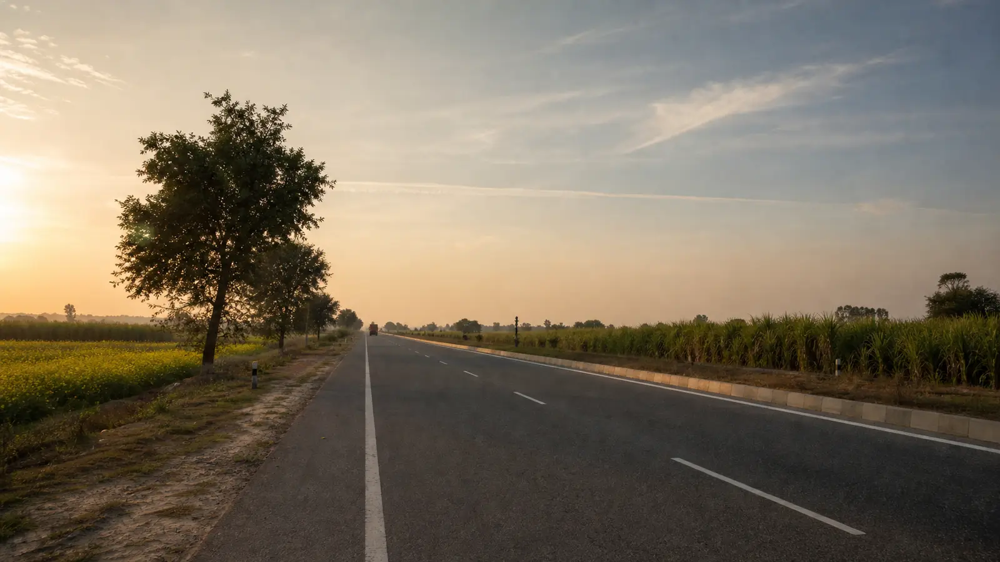
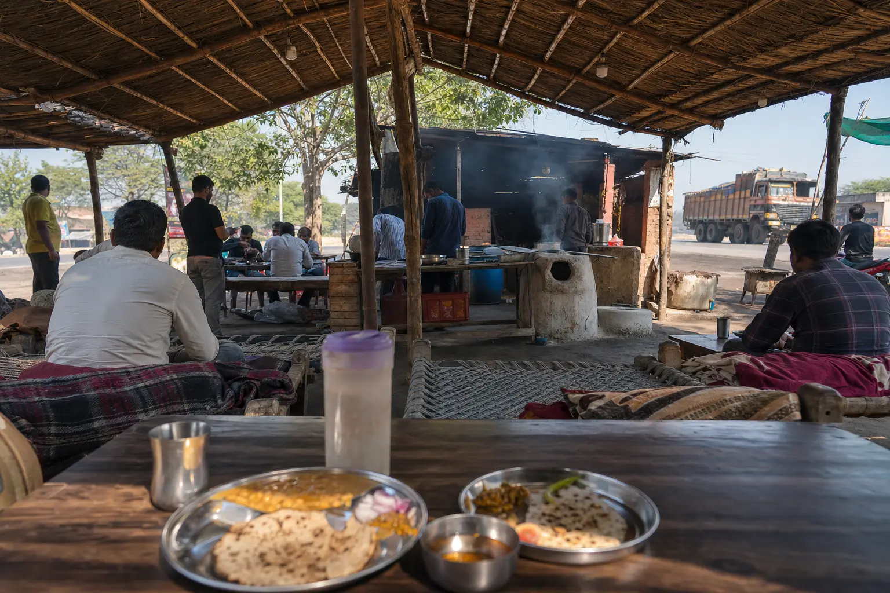

Agra To Aligarh Taxi₹3,000 Round Trip · AC Sedan
Approx. 90 KM
1.5–2 Hrs · Same-Day Return

A Short Drive People Make For Real Reasons
Nobody goes to Aligarh sightseeing. They go for a meeting, to see family, or to the university — which means what matters is that the car turns up, the fare is what you were told, and the driver is still there when you come out. That is a low bar and a surprisingly hard one. ₹3,000 round trip in an AC sedan, tolls at actuals, and the driver waits to your plan.
Agra To Aligarh Taxi At A Glance
~90 KM
From Agra
1.5–2 HRS
Each Way, Highway Drive
₹3,000
Round Trip, AC Sedan
9–9
Support Daily, IST
Agra To Aligarh Taxi Fare
The sedan round trip is a published price. The larger cabs and the one-way fare are quoted on WhatsApp, because we do not have a standing figure for them on this route.
| Cab Type | Seats | Round Trip | One Way |
|---|---|---|---|
| AC Sedan (Dzire / Amaze) | 4 | ₹3,000 | Fare on WhatsApp |
| AC SUV (Ertiga) | 6 | Fare on WhatsApp | Fare on WhatsApp |
| AC SUV (Innova Crysta) | 7 | Fare on WhatsApp | Fare on WhatsApp |
| Tempo Traveller | 12–15 | Fare on WhatsApp | Fare on WhatsApp |
Fares cover fuel and driver charges. Tolls and parking are paid by you at actuals. Brief stops along the way are included at no extra charge, and there is no surge pricing. See the full Agra taxi fare list for every other route.
Your Journey
The Drive, And Where We Drop You
About 90 km from Agra and 1.5 to 2 hours each way — short enough that a same-day return is the norm.
- Agra Pickup from any Agra address
- Aligarh Drop anywhere in the city
~90 km
From Agra
1.5–2 hrs
Each way, highway drive
The Road
- About 90 km, and 1.5 to 2 hours each way — short enough that a same-day return is the normal booking, not the ambitious one.
- The drive uses the Yamuna Expressway link route and is a comfortable highway run for most of the way.
- Pickup from any Agra address — hotel, home, Agra Cantt, Agra Fort station or Kheria Airport.
- Brief stops are included free — tea, a washroom break, whatever the drive needs.
Where We Drop
- AMU campus — university trips are one of the most common reasons this route is booked.
- Centre Point.
- Aligarh railway station.
- Any other address in the city — just say which when you book.
Who Books This Route
Two of the Google reviews above name Aligarh directly, and between them they describe the two commonest reasons people call us for it.
University Trips
Admission interviews, campus visits, dropping or collecting a student. These usually mean a long, uncertain wait in the middle of the day — the driver stays put and there is no charge for the waiting.
Business Travel
A meeting in Aligarh and back the same day. The car is quiet enough to take calls in, and the fare is agreed before you set off so there is nothing to settle afterwards.
Family Visits
Door to door from your Agra address, with brief stops on the way included and no rush at the far end.

Brief Stops Are IncludedEarly And Late Runs
Early-morning and late-night departures are arranged on request — which matters when a train or an appointment sets the time rather than you. Tell us the hour and we confirm before you book.
Clear Fare Breakdown
What The ₹3,000 Covers
The round-trip sedan fare, and what sits outside it.
Included In The Fare
- Private AC Cab, Agra To Aligarh And Back
- Fuel And Driver Charges
- Waiting In Aligarh, To Your Plan
- Brief Stops On The Way
- Door-To-Door Agra Pickup And Drop
- Driver Name, Number And Car Number Before Pickup
Paid Separately By You
- Tolls, At Actuals
- Parking In Aligarh
- Meals On The Way
Why Book This Route With Us
A Price You Can See
₹3,000 for the sedan round trip is published here and on our fare list — not produced after we hear why you are going.
The Driver Waits
Interviews and meetings run long. On a round trip the driver waits to your plan, with no charge for the time it takes.
We Drop Where You Need
AMU campus, Centre Point, the railway station or any city address — not a generic drop point on the outskirts.
Early & Late Journeys
Early departures and late returns, every day of the year including holidays and festivals.
Nothing Settled Afterwards
The fare is agreed in writing first, tolls are at actuals, and there is no surge pricing.
Driver Details Before Pickup
Name, mobile number and car registration number come through before the car arrives. Match the plate before you board.
How Booking Works
01 — Send Your Trip Details
Travel date, pickup point in Agra, where in Aligarh you need to be, passengers, and one way or round trip.
02 — Fixed Fare Confirmed
Confirmed in writing on WhatsApp, including the expected tolls, so the full cost is clear before you say yes.
03 — Driver Details Shared
Name, mobile number and car registration number before pickup — match the plate before boarding. No advance for most bookings.
Local Agra Operator
Your Local Travel Partner In Agra
Padma Shree Travels operates from Shamsabad, Agra, running local sightseeing, station and airport transfers, pilgrimage trips and outstation routes. Every outstation route we run is listed on the outstation cabs hub.
- Your fare Fares are confirmed on WhatsApp before you travel, with the expected tolls identified separately.
- Your driver Your driver’s name, mobile number and car registration number are shared before pickup.
- Pickup and drop Pickup from any Agra address — hotel, home, Agra Cantt, Agra Fort station or Kheria Airport — and drop back at the same place.
Direct WhatsApp and phone support before and during your trip.
.jpg)
Agra To Aligarh — Questions & Answers
How far is Aligarh from Agra?
Aligarh is approximately 90 km from Agra, about 1.5 to 2 hours each way by cab. It is a straightforward highway drive, which is why it works comfortably as a same-day return.
What is the taxi fare from Agra to Aligarh?
The round-trip fare is ₹3,000 for an AC sedan, covering fuel and driver charges. Tolls and parking are paid by you at actuals. Ertiga, Innova Crysta and Tempo Traveller fares are quoted on WhatsApp, as is the one-way fare.
Is a one-way trip available?
Yes. We do not publish a one-way price for this route, so message us on WhatsApp with your date and pickup point and we will confirm it in writing before you book.
Do you drop at the AMU campus?
Yes. We drop at the Aligarh Muslim University campus, Centre Point, the railway station, or any other address in the city — just tell us which when booking. University trips are one of the most common reasons people book this route.
Will the driver wait in Aligarh?
Yes. On a round trip the driver waits to your plan and brings you back to Agra the same day. Brief stops along the way are included at no extra charge. Tell us roughly how long you expect to be, so the day is planned rather than guessed.
Can you pick up early in the morning or late at night?
Yes. Tell us your pickup time — including early-morning or late-night — and we confirm availability in writing before you book. No advance is needed for most bookings, and your driver’s name, number and car registration are shared before pickup.
Which route does the cab take?
The drive uses the Yamuna Expressway link route and is a comfortable highway run for most of the way. Your driver can stop for tea or a washroom break along it — brief stops are included in the fare.
Other Outstation Routes From Agra
All Outstation Cabs from Agra
Every outstation route we run, in one place.
View routesAgra to Gwalior Taxi
120 km into Madhya Pradesh, with a published round-trip fare too.
₹3,000 round tripAgra to Bharatpur Taxi
Keoladeo bird sanctuary, the shortest outstation day trip we run.
Fare on WhatsAppAgra to Jaipur Taxi
One way or round trip on the Rajasthan road.
Fare on WhatsAppAgra Railway Station Taxi
A cab at Agra Cantt for train travellers.
From ₹800Full Agra Taxi Fare List
Every route and package we run, with fares in one table.
All faresAligarh And Back, From ₹3,000
Published fare. The driver waits.
Send your travel date, where in Aligarh you need to be, and roughly how long you expect to be there — we confirm the fare and plan the day around it.
Free cancellation up to 12 hours before departure.